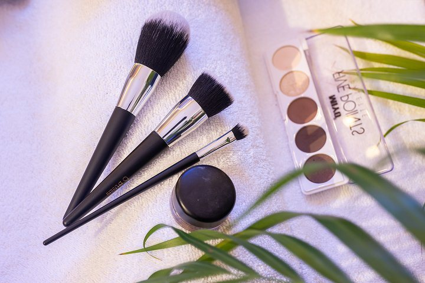

Wimpers & wenkbrauwen
Het werk waar
niemand naar hoeft
te raden.
Extensions, lifting, verven, epileren en threading. Alles met prijs en duur, zodat je weet hoe lang je moet plannen.

Eyebrows & Eyelashes
Eyebrow Cleansing It is quite a job to perfectly model both eyebrows yourself. Therefore, choose to have them modeled at the specialist. The excess hairs around the eyebrow are removed by means of waxing, threading or epilation and your eyebrows are perfectly in shape again. 15 min Eyebrow Threading It is quite a job to perfectly model both eyebrows yourself. Therefore, choose to have them modeled at the specialist. The excess hairs around the eyebrow are removed by means of waxing, threading or epilation and your eyebrows are perfectly in shape again. 20 min€18 Eyebrow Tint Dyeing your eyebrows makes them more visible and gives your face more expression. The result remains visible for 3 to 6 weeks. 20 min€12 Lash Lift This is the way to get beautiful, curled lashes! You no longer need an eyelash curler, because thanks to this treatment, your eyelashes will remain beautifully curled for 5 to 7 weeks. 45 min Eyelash & Eyebrow Tint Dyeing your eyelashes and eyebrows makes them more visible and gives your face more expression. The result remains visible for 3 to 6 weeks. 30 min€25 Microblading pre-advice and shaping Deze permanente make-up-techniek is speciaal ontwikkeld voor de wenkbrauwen. Er worden handmatig met een vlijmscherp mesje flinterdunne haartjes op de huid getekend, dit geeft een heel natuurlijk resultaat. Uiterst geschikt als je droomt van langere, vollere of bredere wenkbrauwen. Ook als je door ziekte of van nature bijna of helemaal geen wenkbrauwhaartjes hebt, kan er door deze methode compleet nieuwe wenkbrauwen worden gecreëerd. 15 min€10Eyelash Extensions
Eyelash Extensions One by One - New Set The one by one technique makes your lashes fuller and longer and provides a natural effect. One false eyelash is applied to each eyelash. 1 uur 15 min€55 Eyelash Extensions - Infill One by One The one by one technique makes your lashes fuller and longer and provides a natural effect. One false eyelash is applied to each eyelash. 55 min€40 Eyelash Extensions - Removal The one by one technique makes your lashes fuller and longer and provides a natural effect. One false eyelash is applied to each eyelash. 30 min€20 Eyelash extension 2D volume - New set Met deze wimperextensions ga je voor een onweerstaanbaar opvallende blik. Op elke wimper worden 2 nepwimpers geplakt, waardoor je wimpers extreem voller en langer worden. 1 uur 30 min€65 Eyelash Extensions - Infill 2D volume Wimperextensions zitten aan de natuurlijke wimper bevestigd. Helaas vallen de natuurlijke wimpers uit waarbij de wimperextensions ook verdwijnen. Het is dan ook aan te raden om iedere 2 tot 3 weken de wimpers op te vullen om het gewenste volumineus effect te behouden. Zo blijven je prachtige blikkenvangers intact! 1 uur€50Threading
Threading - Face The hairs are removed with rope. 15 minKlaar om te boeken?
Klik een regel aan, dan staat hij al ingevuld in de aanvraag.
Afspraak aanvragen